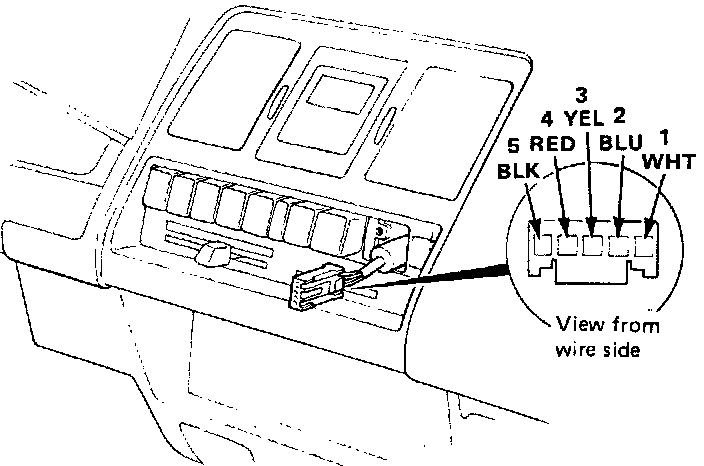
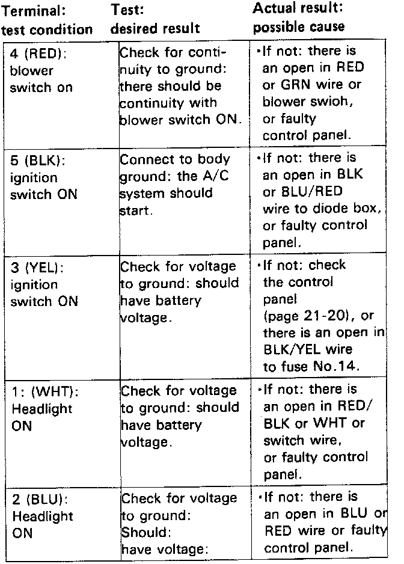

Operation CHARM
: Car repair manuals for everyone.
Home
>>
Acura
>>
1989
>>
Integra L4-1590cc 1.6L DOHC FI
>>
Repair and Diagnosis
>>
Heating and Air Conditioning
>>
Sensors and Switches - HVAC
>>
Air Conditioning Switch
>>
Testing and Inspection
>>
A/C Switch Inputs
A/C Switch Inputs
A/C Switch
Inputs
1.
If the A/C switch is normal, check for inputs at the switch connector according to the table below.


2.
Reinstall the switch in the reverse order of removal.